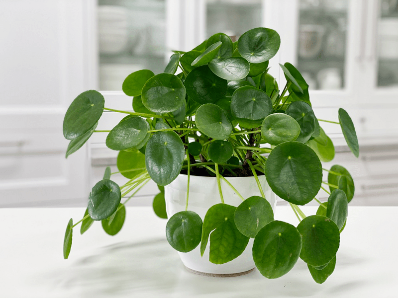
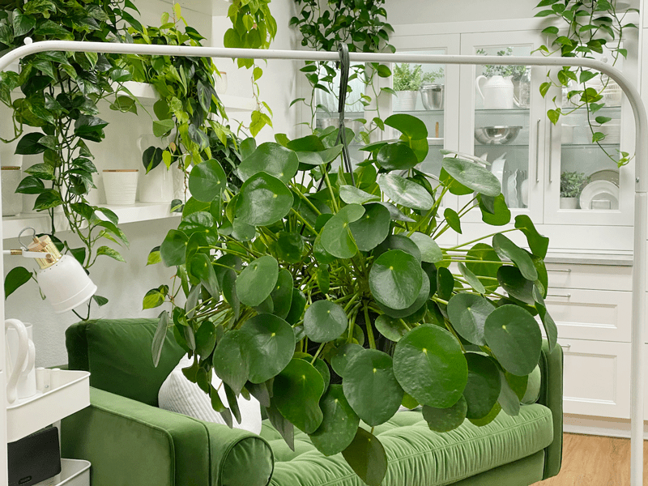
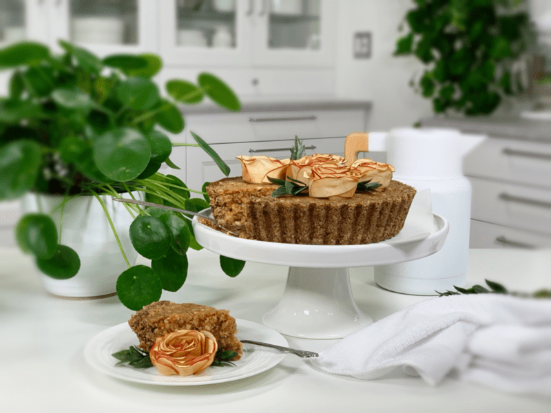
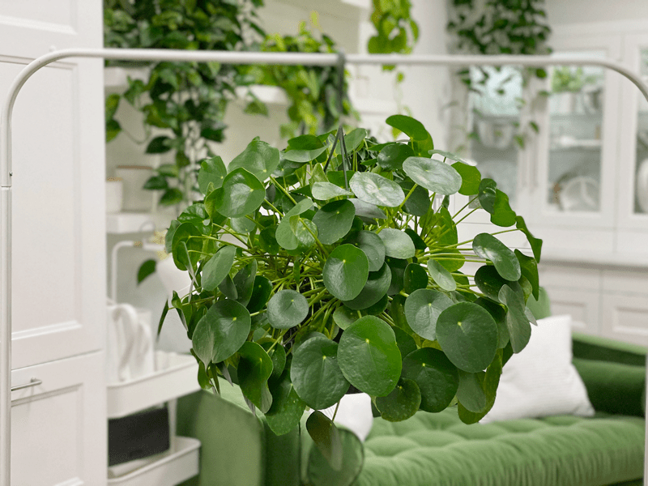
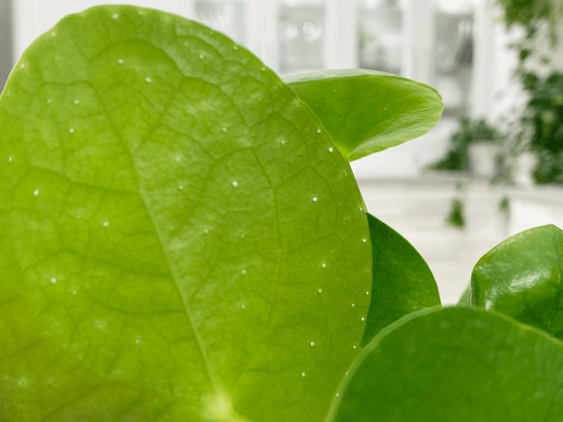
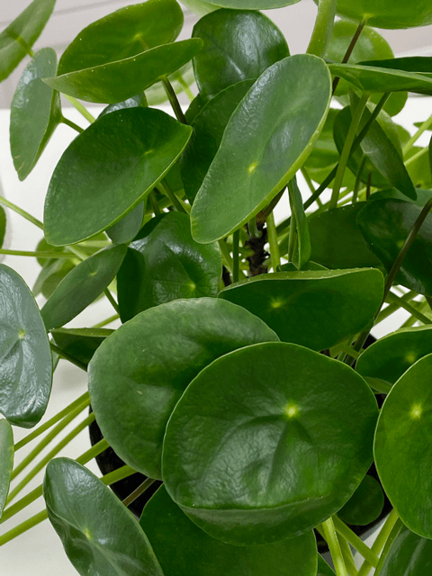
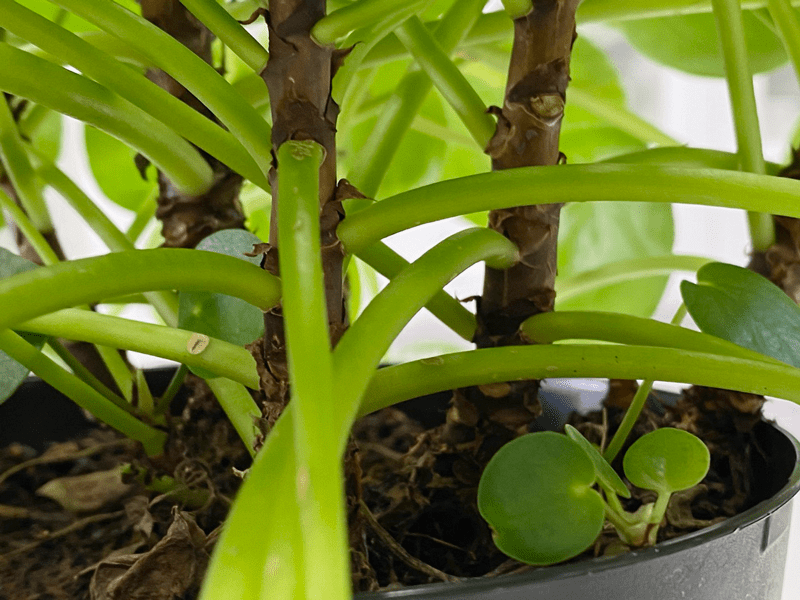
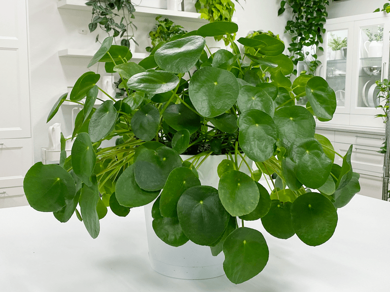

Pilea Peperomioides | Friendship Plant | Care Difficulty – Moderate
Pilea peperomioides is also known as friendship plant, Chinese money plant, pancake plant, UFO plant, lefse plant (oh that fits in with my Norwegian heritage!), missionary plant, bender plant, or mirror grass. Whew–that’s a lot of names, if you ask me. I refer to it as the Friendship Plant because it feels warm and fuzzy to me, and since it is winter as I write this… I need all the warmth and fuzzies that I can get.

In fact, most people refer to it as the friendship plant. The reason is that it creates a lot of little pups (baby) plants, which make for nice gifts to share with those around you. You don’t propagate this plant as you would a pothos plant, for instance. The friendship plant grows runners beneath the soil, and baby pups (plants) spring up from the soil (boing).

If you want to start sharing the little pups with loved ones, you want to wait until the pup is at least 2-3″ tall, then make a clean cut with at least an additional 1″ of bare stem. It’s best to bury the stem, keeping the soil moist while it takes the time to root. If need be, pluck the lower leaves of the stem so you can bury it deeper.

I enjoy using my plants in food photoshoots. Here is my Raw Apple Pie recipe.
Light Requirements
- I place mine in even bright indirect light and rotate them every time I water them, to prevent the plant from leaning in one direction.
Water Requirements
- I stick my finger in the dirt and also lift the pot to see if it still feels heavy from the last watering. If it feels dry to the touch, then I water it again.
- Let it dry out between waterings, but be sure that it doesn’t get bone dry. I water mine about once a week based on the conditions in my house and the condition of the soil. Once I’ve watered it, I make sure that I empty the excess water that catches in the cover pot. Standing water can lead to root rot and also attract fungus gnats. (Read more below on those pesky things.)
- As with all plants, the amount of water your Pilea needs depends on the amount of light it’s getting and the air conditions. I have noticed that during the winter, my plant doesn’t grow as vigorously, and the soil takes longer to dry out. One watering a week will usually do during this time.
Temperature Requirements
- Do not expose it to temperatures below 50 degrees. Avoid sudden temperature swings, cold drafts, and heat vents.
Fertilizer – Plant Food
- Pilea peperomioides doesn’t require a lot of fertilizer. However, you can feed it using a diluted regular houseplant fertilizer once a month or so during the growing season (spring through early fall).

Additional Care
-
Remove any dead, discolored, damaged, or diseased leaves and stems as they occur with clean, sharp scissors. I look over my plants every time I water them.
-
Clean the leaves often enough to keep dust off. Use a damp cloth and lightly rub off any dust to keep the leaves healthy and shiny.
Plant Characteristics to Watch For
Diagnosing what is going wrong with your plant is going to take a little detective work, but even more patience! First of all, don’t panic and don’t throw out a plant prematurely. Take a few deep breaths and work down the list of possible issues. Below, I am going to share some typical symptoms that can arise. When I start to spot troubling signs on a plant, I take the plant into a room with good lighting, pull out my magnifiers, and start by thoroughly inspecting the plant.
I want a lush and full plant!
- These plants have only one main stem, so what you see is what you get.
- Solution: To achieve this, plant multiple plants in one pot or don’t remove the pups (babies) as they spring up. Scroll to the end of this post to view a plant that I just allow to grow without removing any of the new pups.
The leaves are yellowing at the base of the plant.
- The lower leaves yellowing, followed by leaf drop, is considered natural leaf shedding, but if it is happening very rapidly, raise your eyebrow in concern.
The leaves are yellowing all over the plant.
- Overall, yellowing can be brought on by too much direct sun or too much water.
- Solution: Reposition the plant, ensuring that it isn’t getting any direct light. When it comes to watering, allow drying out in between waterings.
The new growth consists of tiny domed leaves.
- If the new growth is doing this, it may be stretching for light, or you might be overfertilizing the plant.
- Solution: Adjust the plant to ensure that it is getting enough bright, indirect light. If you feel you might have been overfertilizing, cut back, and give it time to readjust.
There are blotchy brown spots on the leaves.
- Brown blotchy spots can be a sign of a fungal disease.
- Solution: Remove the affected part of the plant and see if it eventually recovers.
There are white spots on the leaves.
- White dots along the pores of the leaves are minerals being secreted out, which often happens with the use of tap water.
- Solution: Change the water that you are using. I now use distilled water. As you can see in the photo below, my plant leaves started to get covered in these little white bumps (on the underside of the leaf). You can actually rub them off.

The leaves are facing only one direction.
- Solution: Make sure to rotate your plant so that all sides get exposed to light.

The leaves are curling outward.
- The leaves curling outward is typically due to insufficient light.
- Solution: This is not a low-light plant. It is best to position into a place that provides bright, evenly diffused light. Double-check the lighting situation.
The leaves are curling inward.
- Inward-curling leaves can be a sign of being exposed to high heat.
- Solution: Relocate the plant. Make sure to take note of heat vents, fireplaces, or anything that is emitting heat.
Leaves have curled and fallen off.
- If the stem is limp, it can be a sign of overwatering, which can lead to possible root rot.
- Solution: Carefully remove the plant from the pot and shake away some of the dirt so you can view the roots. Assess how many are damaged; they will seem soft and mushy. Depending on the degree of root rot, the plant may not be viable. If you have only a few bad roots, cut them back with a pair of clean scissors and replant. Make sure you aren’t burying the crown too deep into the soil.
The plant is floppy and leaning.
- There is only one stem per plant, and with maturity and growth, more weight is added to the stem, which causes it to lean.
- Solution: Stake the core stem with a stick.

As you can see, I have several plants in one pot. Each “trunk” is a plant. The three little leaves that are near the right side of the pot is a new pup (baby plant) growing. One day, once it’s bigger, I might remove it and share it with a friend.

For perspective, this plant is in an 11.5-inch-wide pot.
Toxicity
This plant is 100% pet safe and non-toxic.
© AmieSue.com